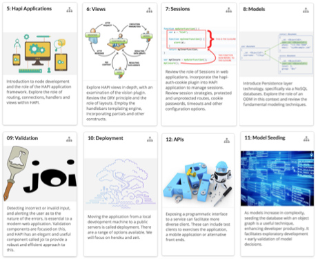
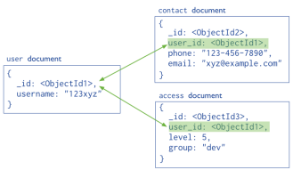
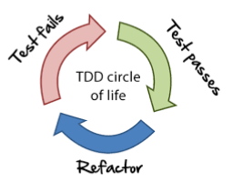
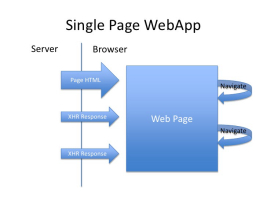
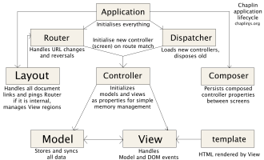
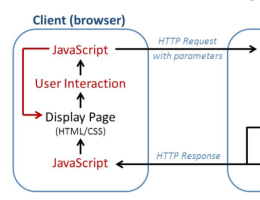
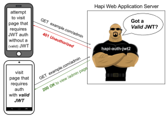

Building Modern Web Applications & Services
Prepared for
OTH Regensburg
by
Eamonn de Leastar
,
WIT
1: Introduction

1: HTML & CSS Revision
2: JavaScript Review
3: DOM & JQuery
4: Ajax & APIs
5: Hapi Applications
6: Views
7: Sessions
8: Models

09: Validation
10: Deployment
11: Model Seeding
12: APIs
13: TDD

14: REST
15: Aurelia Introduction

16: Aurelia View Models
17: Aurelia Routers

18: Aurelia Rest Client

19: Aurelia/Hapi JWT
